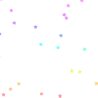
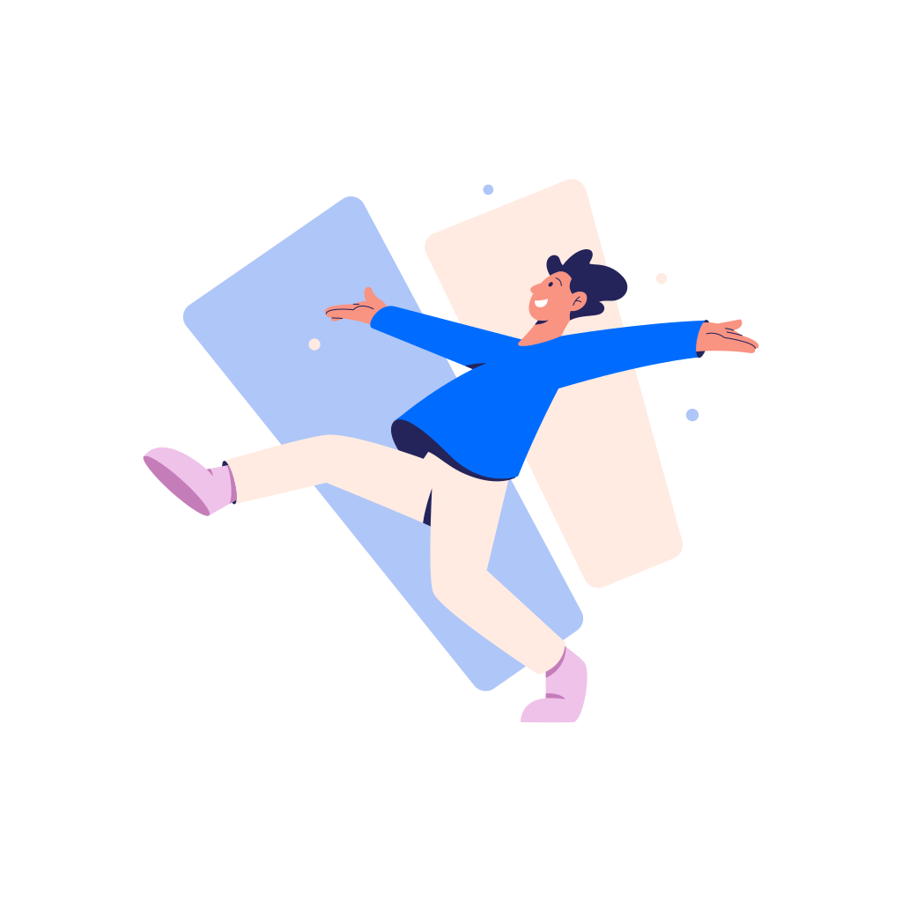
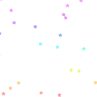
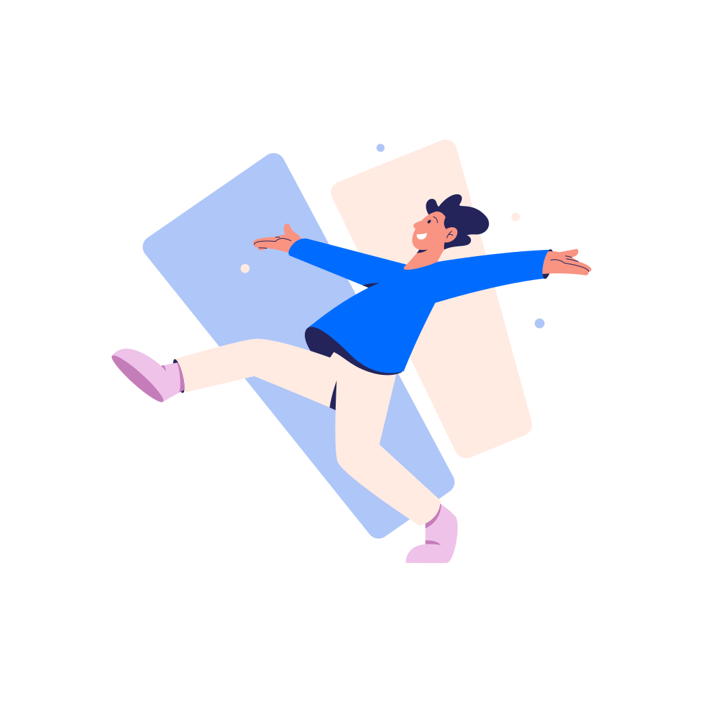

ᗩᗷOᑌT.
Hello, my name is Delvin, I am a university student at York University pursuing a degree in digital media, and specializing in game arts. I possess knowledge in a diverse range of game development tools and software, along with knowledge in the field of game development itself. Along side, programming languages, development skills, a widerange of software tools and technical design and web development to name a few.
I continuously strive to expand and enhance my knowledge in these fields, as I am still learning. I am very goal-oriented and results-driven as I am passionate about the work I do. In the many fields listed, I take pride in those skills as I am always trying my best at it and always love trying new things that aren't quite familiar to me as it only helps me learn and grow!